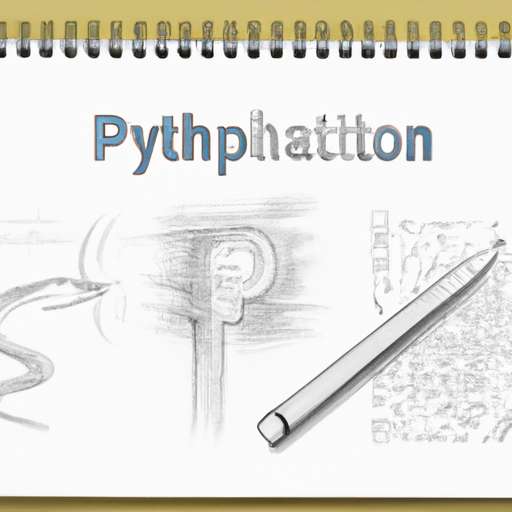

The future of Python and AI
Python is a powerful and versatile programming language that is becoming increasingly popular in the world of artificial intelligence (AI) and machine learning (ML). As a result, many developers and organizations are turning to Python as their language of choice for developing AI and ML applications. OpenAI, an artificial intelligence research lab based in San Francisco, is leading the charge when it comes to pushing the boundaries of AI and ML. OpenAI is utilizing Python as the language of choice for its API, which is allowing developers to quickly and easily create applications that are powered by AI and ML.
As OpenAI continues to grow, it is likely that Python will become even more popular among developers who are looking to create AI and ML applications. In addition, OpenAI’s API is likely to become even more sophisticated, allowing developers to create even more powerful applications. This could lead to a future where AI and ML applications are commonplace, and Python is the language of choice for developing them.
The future of Python and AI looks very bright, and OpenAI’s API is paving the way for developers who are looking to create powerful AI and ML applications. With the right tools and resources, developers can use Python to create applications that are more powerful and efficient than ever before.